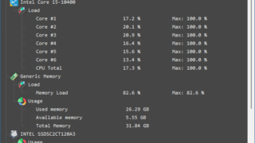

A simple hardware monitoring tool for Windows

A free hardware monitoring tool for Windows that displays motherboard model, BIOS, CPU usage, memory usage, memory usage, hard disk usage, hard disk temperature, etc.
HardMon Overview
HardMon is a real-time hardware monitoring tool for Windows.
HardMon Features
These are the main features of HardMon.
| function |
overview |
| Main Features |
Hardware Monitor |
| Function details |
- Real-time hardware monitoring.
- Displays motherboard model, BIOS, CPU usage, memory usage, memory usage, hard disk usage, hard disk temperature, etc.
- Save information to a text file.
- Adjustable text size.
- Dark theme/light theme. |
Monitor your hardware and provide detailed information
HardMonHardMon is free software for Windows that displays real-time hardware monitoring information and allows you to understand the system status.
With HardMon, you can check information such as motherboard model, BIOS, CPU usage, memory usage, memory usage, hard disk usage, hard disk temperature, etc.
The displayed information can be saved to a text file.
HardMon has the ability to save all displayed information to a text file, adjust the text size if you have trouble reading it, and switch between dark and light themes.
HardMon's displayed numbers are updated in real time, making it easy to see if these components are under stress.
A simple hardware monitoring tool for Windows
HardMon is an application that provides detailed information about the components of your computer system, displaying real-time data about components such as the CPU, GPU, RAM, and storage devices in an organized interface.
|